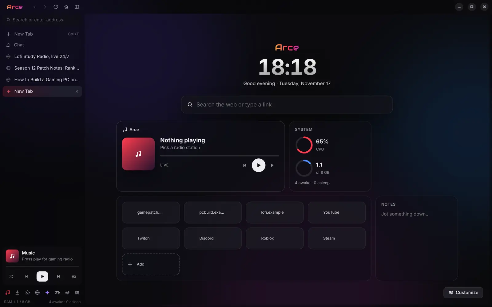
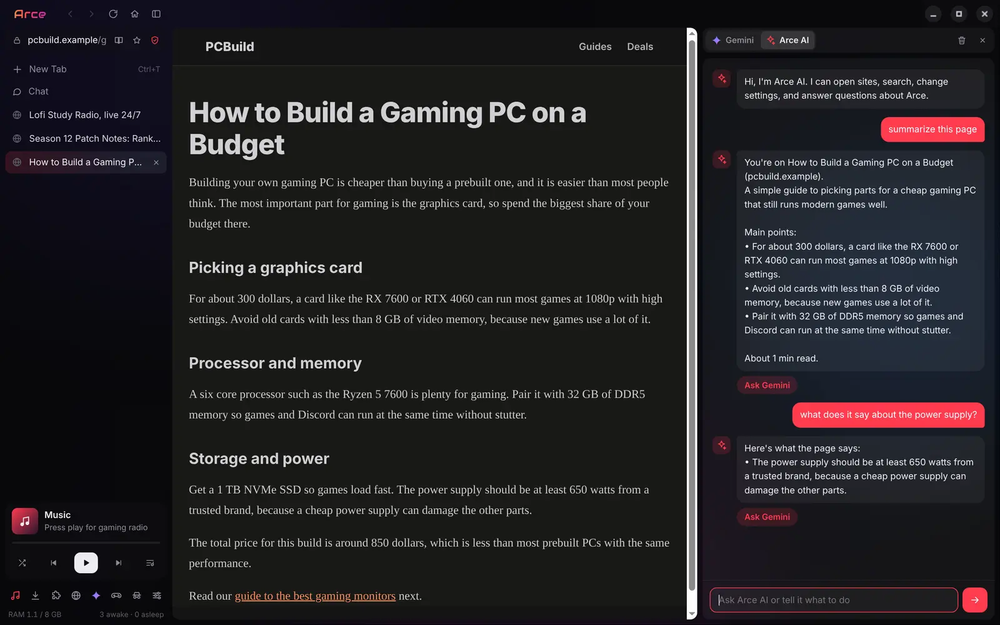
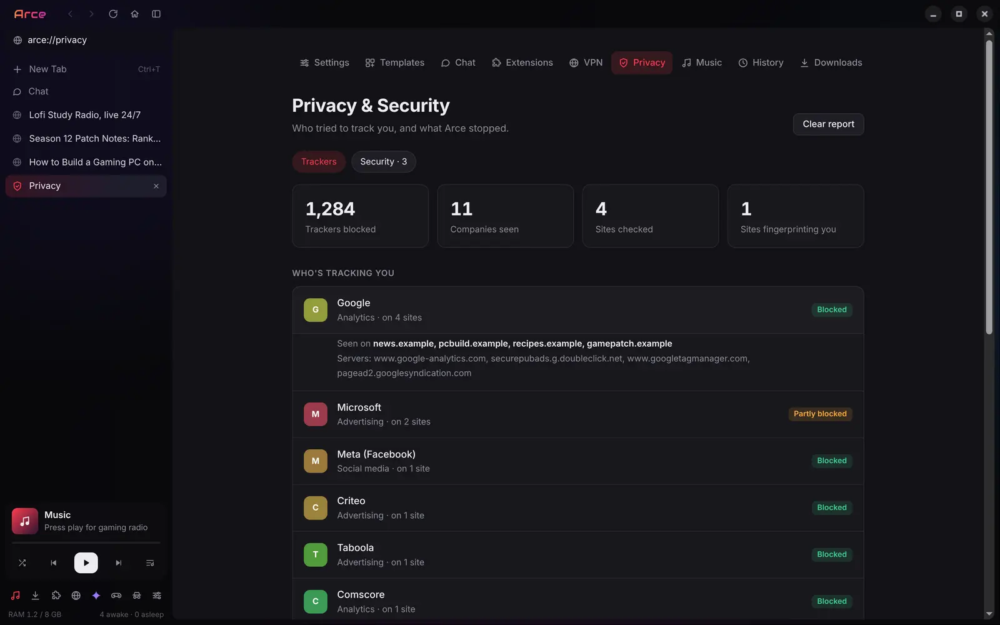
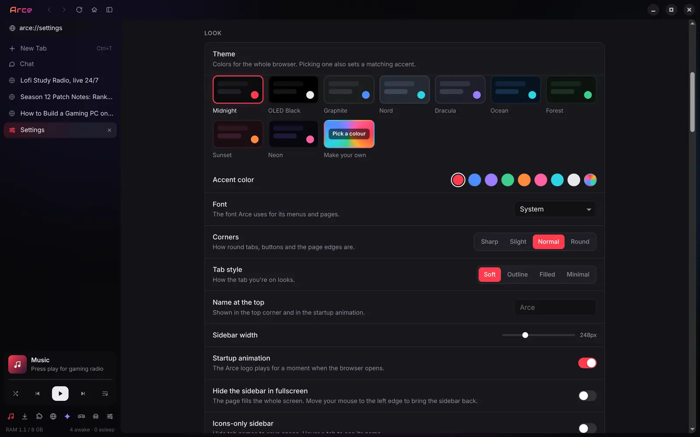
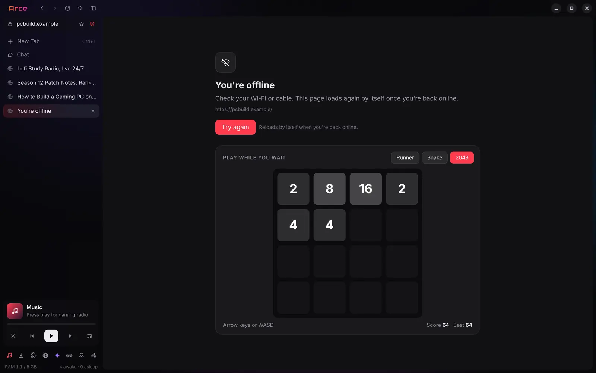

Arce blocks ads with uBlock, shows you who is tracking you, frees up your PC with Game Mode, and lets you make every part of it your own. Free for Mac and Windows.

Arce is light on memory and ready to go the moment you install it.
Arce AI is built into the browser and runs on your device, so it answers instantly and your questions never leave your computer. Gemini sits right next to it for anything bigger.

Arce blocks ads and trackers with uBlock Origin's filter lists. The report shows which companies tried to follow you on each site, and whether Arce stopped them.

Pick one of nine themes or build your own from any colour. Then tune the rest until it feels like yours, and share the whole look as a template.

When your connection drops, Arce's offline page has three mini-games: Runner, Snake and 2048. The page reloads by itself as soon as you're back online.

Ads, trackers and pop-ups blocked with uBlock Origin's lists, including YouTube.
Sleeps background tabs and pauses animations so your game gets the CPU and memory.
End-to-end encrypted chat with friends and groups, file sharing, and edit or delete.
Gaming radio stations, your own music files, and Spotify controls in the sidebar.
Float any video in a small window on top while you keep browsing.
Strips ads and clutter from articles so they're easy to read.
Translate any page into your language with one click.
Shift-click any link to peek at it in a floating window.
No history, cookies, passwords or download list are kept after you close it.
Two tabs side by side, and separate tab groups for school, games and more.
Share your whole setup, or try ones other people made, in one click.
New versions install with one click from the sidebar. No reinstalling.
Version 1.19.0. After you install it once, Arce keeps itself up to date.
macOS 12 or newer, Apple Silicon and Intel.
Download for Mac Unzip it and drag Arce into Applications. The first time, right-click Arce and choose Open.Windows 10 and 11, 64-bit.
Download for Windows Run the installer. No admin rights needed. If Windows SmartScreen appears, click More info, then Run anyway.Yes. Arce is free to download and use, with no account and no ads.
On Mac, Arce uses WebKit, the same engine as Safari, so it's light on battery and memory. On Windows, it uses Chromium, the engine inside Chrome and Edge, so websites work just like they do there.
Yes. Arce uses uBlock Origin's filter lists and its site fixes. If a site ever breaks, click the shield in the address bar to turn blocking off just for that site.
No. Arce AI is Arce's own assistant and it runs entirely on your device, with no servers. It can open sites, search, change settings, answer questions about Arce, and read the page you're on to summarize it or find things. For open-ended questions, Google's Gemini is in the same panel.
No. Your history, the privacy report and Arce AI conversations stay on your device. Arce Chat messages are end-to-end encrypted. Incognito windows don't keep history, cookies, passwords or your downloads list.
Game Mode sleeps background tabs and pauses animations to free up CPU and memory while you play, and a RAM limit on Windows keeps Arce's memory in check. Arce also has gaming radio, Discord status and pop-out videos for watching streams while you play.
You don't need to download it again. When a new version is out, an Update button appears in the sidebar.
Open an issue on GitHub.